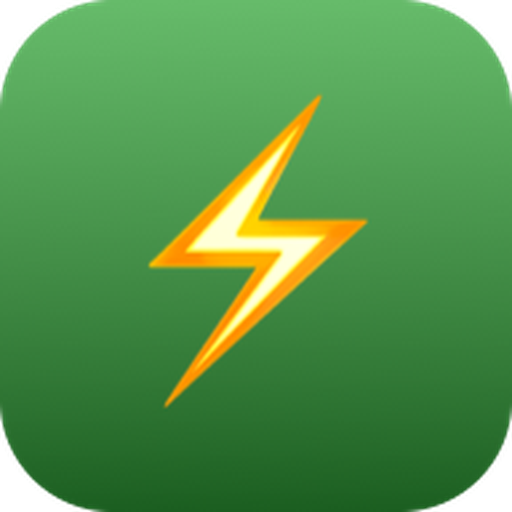
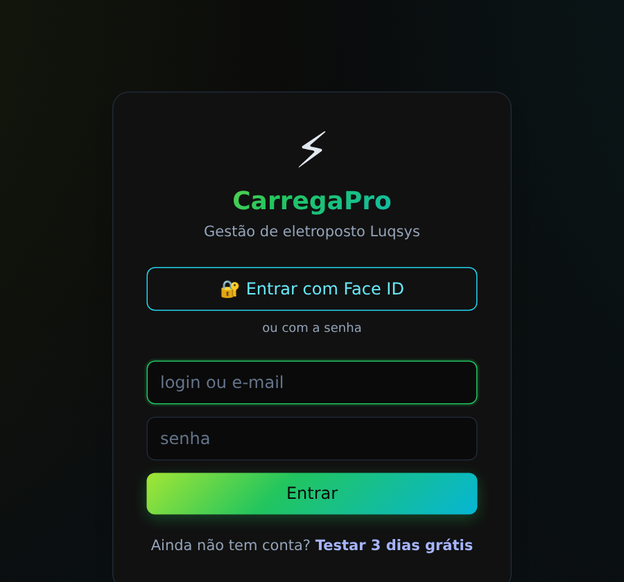
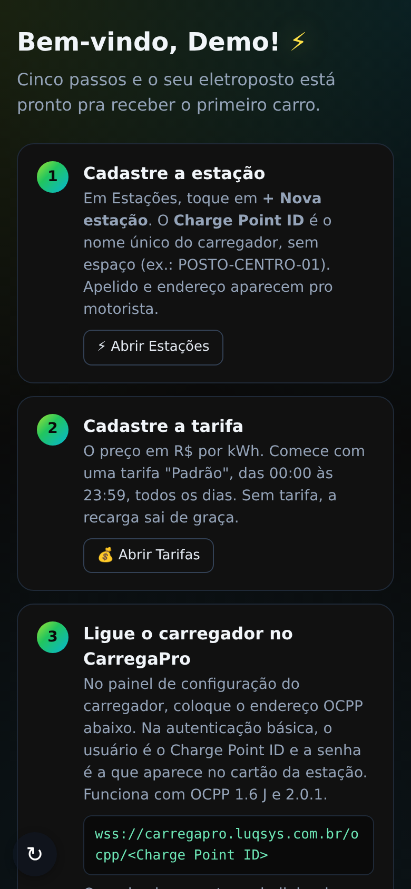
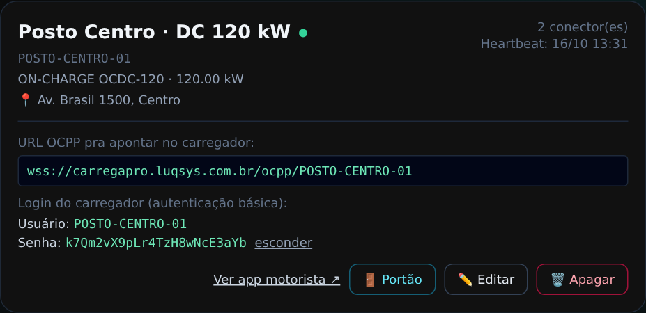
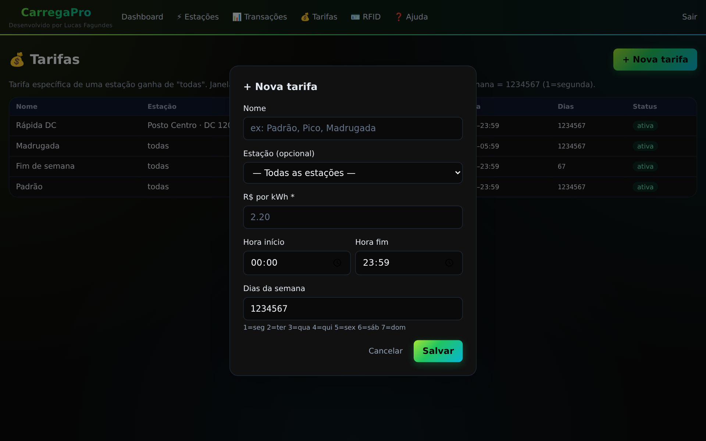
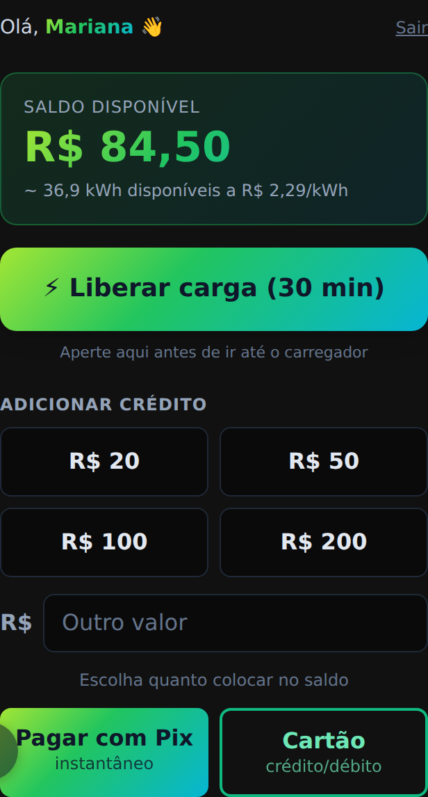
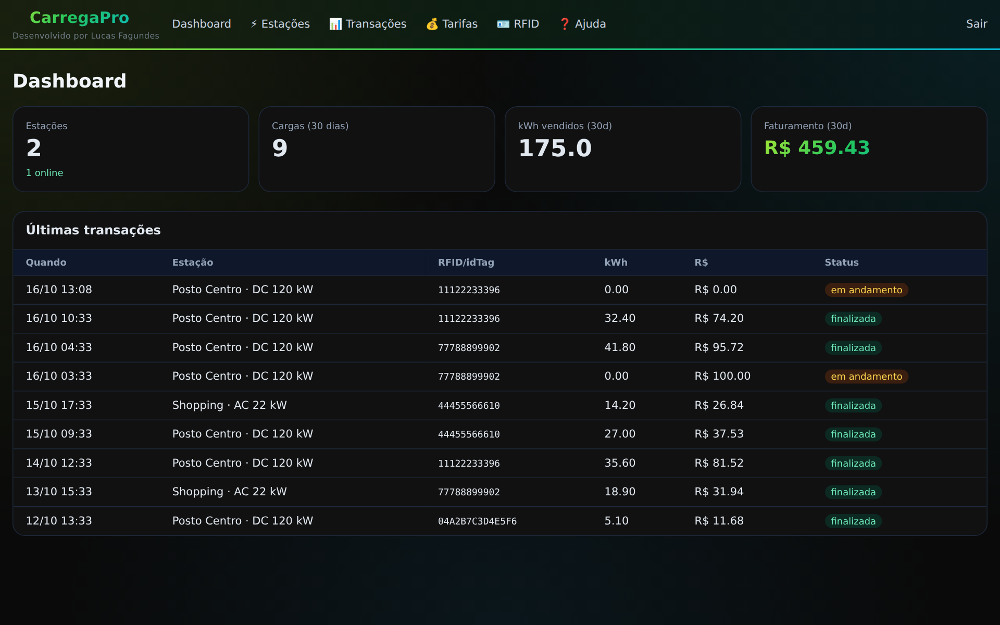
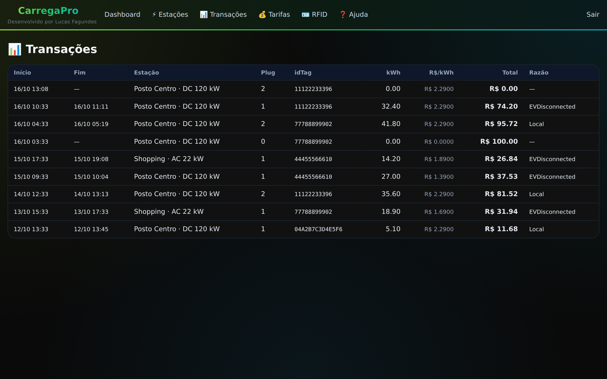

CarregaProDo primeiro acesso até a primeira recarga: cadastrar a estação, ligar o carregador, definir o preço do kWh e acompanhar as recargas.
No navegador do celular ou do computador: carregapro.luqsys.com.br
O login é o e-mail do cadastro. Quem ainda não tem conta toca em Testar 3 dias grátis.
Ainda não tem "esqueci minha senha" nem troca de senha dentro do sistema. Chame o suporte no WhatsApp e a gente gera uma nova.
Já dentro do sistema, toque em 🔐 Ativar Face ID no menu. Depois é só tocar em Entrar com Face ID no login. Ative em cada aparelho.
Abra carregapro.luqsys.com.br/instalar e siga o passo a passo do iPhone ou do Android. Fica com ícone na tela, igual um aplicativo.

| Dashboard | Resumo dos últimos 30 dias e as últimas recargas. |
| ⚡ Estações | Seus carregadores, o endereço OCPP e o login de cada um. |
| 📊 Transações | O histórico das recargas. |
| 💰 Tarifas | O preço do kWh, por horário e dia da semana. |
| 🪪 RFID | Cartões e motoristas cadastrados. |
| ❓ Ajuda | Perguntas e respostas com busca, e o botão do suporte. |
No primeiro acesso o sistema abre a tela de boas-vindas, com 5 passos:
Em Estações → + Nova estação.
O preço em R$ por kWh. Comece com uma tarifa "Padrão".
Endereço OCPP, usuário e senha no painel do carregador.
O link do app do motorista, impresso como QR no carregador.
Pra acompanhar as recargas de qualquer lugar.
Depois toque em Tudo certo, ir pro painel →. Dá pra rever esses passos pela Ajuda.

POSTO-CENTRO-01. Se ele já estiver em uso, mesmo em outra conta, a estação não é criada: escolha outro.No painel de configuração do carregador (app ou site do fabricante, ou com o instalador), preencha com o que aparece no cartão da estação:
| Endereço do servidor OCPP | wss://carregapro.luqsys.com.br/ocpp/<Charge Point ID> |
| Charge Point ID | Igual ao cadastrado, letra por letra (maiúsculas e minúsculas contam). |
| Autenticação básica | Usuário = o Charge Point ID. Senha = a do cartão da estação (toque em mostrar). |
| Versão | OCPP 1.6 J ou OCPP 2.0.1. O mesmo endereço serve pras duas. |

1234567 = todos os dias.
Pela tela ainda não dá pra editar nem apagar tarifa. Precisa mudar? Fale com o suporte.
O link de cada estação está em Ver app motorista ↗, no cartão dela. Transforme num QR e cole no carregador.

Estações e quantas estão online, cargas, kWh e faturamento dos últimos 30 dias, e as 10 últimas transações com "em andamento" ou "finalizada".

As últimas 200 recargas, da mais nova pra mais antiga: início, fim, estação, plug, idTag (o CPF ou o cartão), kWh, preço por kWh, total e o motivo do fim enviado pelo carregador.

Cada motorista que se cadastra pelo app aparece em RFID, com o CPF como idTag. Dá pra cadastrar cartões em + Nova tag. O tipo (cliente, interno, vip…) é só uma etiqueta: o preço é sempre o da tarifa, e a regra pra liberar é a mesma do motorista (saldo e liberação no app).
wss:// e termina com o Charge Point ID certo.